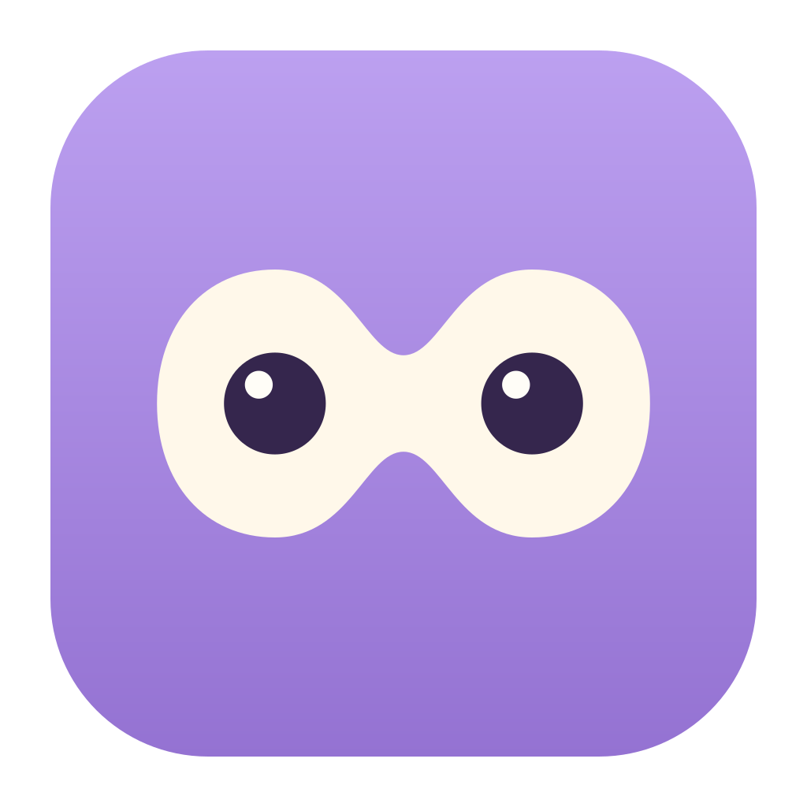

happylulu · EYES STUDY 02
가로로 누운 8자, 동그란 두 눈.
양쪽은 둥글게, 가운데는 잘록하게. 하나로 이어지는 올루루의 눈테.
앱 아이콘연결형 눈테

happylulu
라벤더 · 크림 · 짙은 보라
눈 심볼한 줄로 이어진 윤곽
같은 눈테를 밝은 메뉴바와 어두운 메뉴바에.
공통 타일 896 × 896 · R200 · 여백 64 / 1024 기준Pretendard · 제목 700 / 본문 400
happylulu · EYES STUDY 02
양쪽은 둥글게, 가운데는 잘록하게. 하나로 이어지는 올루루의 눈테.

happylulu
라벤더 · 크림 · 짙은 보라
같은 눈테를 밝은 메뉴바와 어두운 메뉴바에.